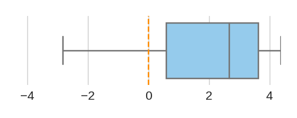

Total sequences = 396
[90% CI]

[21.04, 28.14]
| Rank | Motif(s) | Motif logo |
Signed Log10 p-value [90% CI] |
# mutation (% total seq) | # pos mutation (% total mutation) | # neg mutation (% total mutation) | Median score difference | Mean score difference | Score difference distribution |
|---|---|---|---|---|---|---|---|---|---|
| 1 | CTCF|CTCFL|CTCFL | |
24.67 [21.04, 28.14] |
234 (59.09%) | 206 (88.03%) | 28 (11.97%) | 2.676 | 2.164 |  |